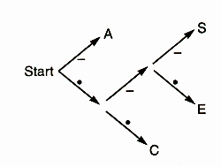
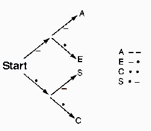

| Packages Used |
| Just Perl |
You are probably familiar with Unix compress, gzip, or bzip2 utilities, or the DOS pkzip utility. These programs all make files smaller; we say that such files are compressed. Compressed files take less disk space and less network bandwidth when you move them around. The downside of compressed files is that they are full of unreadable gibberish; you usually have to run another program to uncompress them before you can use them again. In this article we'll see how file compression works, and I'll demonstrate a simple module that includes functions for compressing and uncompressing files.
The idea behind most data compression is very simple. In a typical text file, every character takes up the same amount of space: eight bits. The letter 'e' is represented by the eight bits 01100101; the letter Z is represented by the eight bits 01011010. But in most text files, 'e' occurs much more frequently than 'Z' - about 75 times as frequently. If you could give the common symbols short codes and the uncommon symbols long codes, you'd save space.
This isn't a new idea. It was exploited by Samuel Morse in Morse code, a very early digital data transmission protocol. Morse code was designed to send text messages over telegraph wires. A telegraph is very simple; it has a switch at one end, and when you close the switch, an electric current travels through a wire to the other end, where there is a relay that makes a click. By tapping the switch at one end, you make the relay at the other end click. Letters and digits are encoded as sequences of short and long clicks. A short click is called a 'dot', and a long click is called a 'dash'.
The two most common letters in English text are 'E' and 'T'; in Morse code these are represented by a single dot and a single dash, respectively. The codes for 'I', 'A', 'N', and 'M', all common letters, are . ., . -, - ., and - -. In contrast, the codes for the uncommon letters 'Q' and 'Z' are - - . - and - - . ..
In computer file compression, we do a similar thing. We analyze the contents of the data, and figure out which symbols are frequent and which are infrequent. Then we assign short codes to the frequent symbols and long codes to the infrequent symbols. We write out the coded version of the file, and that usually makes it smaller.
There's a problem with Morse code: You need a third symbol, typically a long pause, to separate the dots and dashes of one letter from the dots and dashes of the next. Otherwise, if you get . -, you don't know whether it's the single letter 'A' or the two letters 'ET' - or it might be maybe the first part of 'R' or 'L'. In a long message, all the dots and dashes run together and you get a big mess that can't be turned back into text. In Morse code, it can be hard to tell 'Eugenia' from 'Sofia'. Without the interletter pauses, they're both:
. . . - - - . . - . . . . -
Those interletter spaces take up a lot of transmission time, and it would be nice if you didn't need them. It turns out that if you arrange the code properly, you don't. The ambiguity problem with Morse code occurs because some codes are prefixes of others: There are some letters where the code for one letter is just the same as the code for the other letter, but with something extra tacked on. When you see the shorter code, you don't know if it's complete or if it should be combined with the following symbols.
Suppose for simplicity that we only needed to send the letters A, C, E, and S over the telegraph. Instead of Morse code, we could use the following code table:
A - C . . E . - . S . - -
Suppose we receive the message - . . . . . - . . - - . - - . - . . - -. What was the message? Well, the first symbol is -, so the first letter in the message must be A, because that's the only letter with a code that starts with a -. Then the next two symbols are . ., so the second letter must be a C, because all the other codes that start with . begin with .-, not ... Similar reasoning shows that the third letter is also C. After that, the code is . - .; it must be an E. We continue through the message, reading off one letter at a time, and eventually we get the whole thing this way.
It's so simple that a computer can decode it, if the computer is equipped with a decision tree like this one:

Start at 'Start', and look at the symbols in the message one by one. At each stage, follow the appropriate labelled branch to the next node. If there's a letter at that node, output the letter and go back to the start node. If there's no letter at the node, look at the next symbol in the input and continue down the tree towards the leaves.
Obviously, it's important to choose the right code. If Morse had made the . code for Z and . . - . the code for E, he wouldn't be famous.
Choosing the right code can be tricky. Consider the example of the previous section, where we only had to code messages containing A, C, E, and S. The code I showed is good when we expect our messages to contain more A's than E's or S's. If S were very common, we clearly could have done better. Less clearly, if all four letters were about equally common, then we could still have done better by assigning each letter a code of the same length:

Suppose our message happened to contain 200 of each of the four letters. Then the first code would use 1800 symbols, and the second code would use only 1600.
In 1952, David A. Huffman discovered a method for producing the optimal unambiguous code. For a given set of symbols, if you know the probability with which each symbol appears in the input, you can use Huffman's method to construct an unambiguous code that encodes the typical message with fewer .'s and -'s than any other code. The method is very simple and ingenious. For concreteness, let's suppose that the (rather silly) message is
THEnnTHIRSTIESTnnSISTERSnnTEETHnnRESISTnnTHISnnSTRESS
(I used nn instead of space so that it'll be easier to see.)
Start with the table of relative probabilities; you can get this by counting the occurrences of every symbol in the message. This is called 'histogramming'. (A histogram is a bar chart; histos is Greek for a beam or a mast.) Here's the histogram for the symbols in our sample message:
S 11 T 10 E 7 nn 6 I 5 H 4 R 4
Now take the two least common entries in the table: H and R. They'll get the longest codes, because they're least common. We'll simplify this by pretending that H and R are the same, and lump them together into one category, which we'll call HR. Then we'll assign codes to all the other letters and to HR. When we're done, we still have to distinguish between H and R. Now, HR has some code. We don't know what it is yet, so let's symbolize it with <HR>. We don't really need to use <HR> in our message, because the is no such thing as the letter HR, so we'll split it in two, and let the code for H be <HR>. and the code for R be <HR>-. As a result of this, the codes for H and R will be longer than the codes for the other letters, but if that has to happen, it's better for it to happen for H and R, because they are the least common letters in the message.
So we will lump H and R together and pretend temporarily that they are only one letter. Our table then looks like this:
S 11 R = <HR>— T 10 H = <HR>. HR 8 E 7 nn 6 I 5
Now we repeat the process. The two least common symbols are I and nn. We'll lump them together into a new symbol called Inn, we'll assign finish assigning the codes to S, T, HR, E, and Inn. When we're done, I will get the code <Inn>. and nn will get the code <Inn>-.
S 11 R = <HR>— Inn 11 H = <HR>. T 10 nn = <Inn>— HR 8 I = <Inn>. E 7
Then we lump together HR and E:
HRE 15 R = <HR>—
S 11 H = <HR>.
Inn 11 nn = <Inn>—
T 10 I = <Inn>.
HR = <HRE>—
E = <HRE>.
Then we lump together T and Inn:
InnT 21 R = <HR>—
HRE 15 H = <HR>.
S 11 nn = <Inn>—
I = <Inn>.
HR = <HRE>—
E = <HRE>.
Inn = <InnT>—
T = <InnT>.
Then we lump together S and HRE:
SHRE 25 R = <HR>—
InnT 21 H = <HR>.
I = <Inn>—
nn = <Inn>.
HR = <HRE>—
E = <HRE>.
Inn = <InnT>—
T = <InnT>.
S = <SHRE>—
HRE = <SHRE>.
Now we only have two symbols left. There's only one way to assign a code to two symbols; one of them gets . and the other gets -. It doesn't matter which gets which, so let's say that SHRE gets . and InnT gets -.
Now the codes fall out of the table we've built up in the right-hand column:
SHRE = .
S = .—
HRE = ..
HR = ..—
R = ..— —
H = ..—.
E = ...
InnT = —
Inn = — —
nn = — — —
I = — —.
T = —.
We throw away the codes for the fictitious compound symbols, and we're left with the real code:
S = .— T = —. nn = — — — I = — —. H = ..—. R = ..— —
As promised, the code is unambiguous, because no code is a prefix of any other code. Our original message encodes like this:
—...—....—— — —...—.— —...— —.— —.— —.....— —.— — — .— — —..— —......— —.— — — — —.......—...—.— — — ..— —....— — —..— —.— — — —...—.— —..— — — — .— —...— —....—.—
For a total of 128 .'s and -'s, an average of 2.72 symbols per character, and a 9.3% improvement over the 141 symbols we would have had to use if we had given every letter a three-symbol code.
For this article, I implemented a demonstration module that compresses files. You can retrieve it from my Perl Paraphernalia web site at http://www.plover.com/~mjd/perl/Huffman/. The program htest.pl compresses an input and saves it to the file /tmp/htest.out; then it opens this file, reads in the compressed data, decompresses it, and prints the result to standard output.
Most of the real work is in the Huffman module that htest.pl uses. Here are the important functions that it calls:
my $hist = Huffman::histogram(\@symbols);
This generates the histogram of the input text. The histogram is the tally of the number of occurrences of each symbol. The argument to histogram() is an array of symbols, passed by reference for efficiency because it is likely to be very large. It might have been simpler to pass the input as a single string, but with this interface we can assign codes per-word instead of per-character if we want to, just by splitting the input into an array of words instead of letters.
my $codes = Huffman::tabulate($hist);
The tabulate() function generates the code table from thie histogram using Huffman's method. (This has the side effect of destroying the histogram.) The code table is just a hash that maps symbols to codes; the codes themselves are strings like 0010011.
Huffman::save_code_table(*FILE, $codes);
This writes the code table to the file.
Huffman::encode(*FILE, $codes, \@symbols);
This encodes the input text and writes the result to the file.
my $codes = Huffman::load_code_table(*FILE); my $coded_data = <FILE>; my $text = Huffman::decode($codes, $coded_data);
This is the decompression process. The return value from load_code_table() is a code table in a rather interesting form. It's a decision tree, just like the ones we saw earlier in the article. Each node of the tree is either a single string (the symbol that the decoder should output) or an array with two elements; the 0th element is the part of the tree on the branch labeled 0, and the 1st element is the part of the tree on the branch labeled 1. For example, taking . as equivalent to 0 and - as equivalent to 1, the first decision tree in this article is represented like this:
[[C,
[E,
S
]
],
A
]
We can compress the file, but unless we include the code table in the compressed file, we won't be able to uncompress it again. Files that can't be uncompressed are not very useful. But sometimes the code table is bigger than the savings that we got from compressing the file, especially if the original file is small. On a sample file of comp.lang.perl.misc articles, the compressor reduced the file size by 32%, from 42733 bytes to 29114. But when I ran it on its own source code, the file size increased from 987 bytes to 1321. The compressed data was only 631 bytes long, but the code table and other overhead took up 690 bytes.
Huffman coding is optimal in the sense of compressing a given set of symbols into the smallest space possible. But if you read just your idea of a symbol, you can get much better compression.
Suppose you're compressing English text. If you histogram the characters and use Huffman's method, you'll get the optimal way to encode the characters. Because each character has its own code, your result could also encode random gibberish. It should be clear that this expressiveness has a price. For English text, we don't need so much expressiveness; it's clearly more efficient to assign a code to each word instead of to each character. In doing so, we lose the ability to encode random gibberish, but our compressed data becomes much smaller. Suppose there are about 217 words in English; if we assign each one a different 17-bit code, we can then encode our original seven-word message:
THE THIRSTIEST SISTERS TEETH RESIST THIS STRESS
...into 7*17 = 119 bits, already an improvement on the 128 we used before. And if we use Huffman's method to assign long codes to rare words and short codes to common words, we can do even better.
Using this method, I compressed the comp.lang.perl.misc articles by 63%. Unfortunately, the code table blew up as a result, and took up 43739 bytes, which was larger than the original uncompressed data.
Most modern data compression doesn't use Huffman coding directly. A better method was proposed in 1977 and 1978 by Jakob Ziv and Abraham Lempel. The Lempel-Ziv methods scan the input data, and when they find a substring that occurs twice, the replace the second occurrence with a reference back to the first. The references can then be Huffman-compressed.
These methods have several advantages over the basic scheme I implemented. One important benefit of Lempel-Ziv compression methods is that they don't have to analyze the entire input in advance; they can construct a code table as they go along, basing it on only the portion of the input seen so far. This is important for practical applications. The data compression in your modem wouldn't be very useful if the modem had to gather and histogram a week's worth of traffic before it could send or receive anything.
An extra payoff of building the code table on the fly is that if the algorithm notices that the code table isn't performing well, it can start over with a new code table in the middle. If the data is in several pieces that have very different personalities, say a graphic image embedded in a text file, this method will be a win over straight Huffman coding because it'll be able to apply an appropriate code table to each part of the data. LZW (Lempel-Ziv-Welch), the compression algorithm used by the DOS lha program, doesn't do this, but the variation of it employed by the Unix compress program does. The algorithm used by the GNU project's gzip and zlib is different but also periodically throws away the code tables and starts over.
The best thing about Lempel-Ziv methods is that they don't need to decide in advance how to break up the input into symbols. LZW, for example, puts any string that it hasn't seen before into the code table, under the assumption that if it appeared once it'll probably appear again. As the input comes in, longer and longer substrings of the input go into the code table; long substrings go in only when their shorter prefixes have appeared multiple times. This means that if the file is best broken up into words, the algorithm will eventually detect that; if it is best broken up into single characters, the algorithm will detect that too.
If you want an easy but possibly amusing project, try altering the module so that the code tables are smaller. At present, the module does not assume that the coding is done per-character, so you shouldn't break that.
Actually, though, assigning the codes per-word seems to blow up the code table more than it saves. I haven't found a case yet where it's worthwhile. I'd be interested in seeing more analysis of this.
Finally, the decision-tree data structure in the decoder is probably over-clever. It would be simpler to represent the same information with a 'state table' this way:
0 1
0 1 A
1 C 2
2 E S
The leftmost column lists the three states of our table: 0, 1, and 2. Each internal node in the decision tree is assigned a state; the root node gets the number 0. To decode, the decoder keeps track of the state number, which says what internal node it's currently at. Each time it reads a 0 or 1, it looks in the table to decide where to go next. If it sees a symbol, that means it reached a leaf, and should output that symbol and start over at state 0; if it sees a number, that means it's now at a different internal node and should read more bits. I'm not sure whether this would be more efficient than the way I did do it, but it would probably be easier to understand.
Symbols, Signals, and Noise, J.R. Pierce, pp. 94-97. Harper, New York, 1961.
The comp.compression FAQ is an excellent starting source of information, especially part 2. It is available from ftp://rtfm.mit.edu/pub/usenet/news.answers/compression-faq/.
My column finally has a name! 'Bricolage' is a hot word these days in the computer learning business; it's French for 'tinkering' or 'pottering'. Thanks to Deven Ullman, who suggested it, and to the other people who suggested names.
__END__